Лабораторная работа №7
Операционные системы
Николаева А. Б.
Российский университет дружбы народов, Москва, Россия
19 июня 2026
Информация
Докладчик
- Николаева Ангелина Борисовна
- Студентка НКАбд-04-25
- Российский университет дружбы народов
- [1032253612@rudn.ru]

Цель работы
ознакомление с файловой системой Linux, её структурой, именами и содержанием каталогов
приобретение практических навыков по применению команд для работы с файлами и каталогами, по управлению процессами (и работами), по проверке использования диска и обслуживанию файловой системы
Задание
- Выполните все примеры, приведённые в первой части описания лабораторной работы.
- Выполните следующие действия, зафиксировав в отчёте по лабораторной работе используемые при этом команды и результаты их выполнения:
- 2.1. Скопируйте файл /usr/include/sys/io.h в домашний каталог и назовите его equipment. Если файла io.h нет, то используйте любой другой файл в каталоге /usr/include/sys/ вместо него.
- 2.2. В домашнем каталоге создайте директорию ~/ski.plases.
- 2.3. Переместите файл equipment в каталог ~/ski.plases.
- 2.4. Переименуйте файл ~/ski.plases/equipment в ~ski.plases/equiplist.
- 2.5. Создайте в домашнем каталоге файл abc1 и скопируйте его в каталог ~/ski.plases, назовите его equiplist2.
- 2.6. Создайте каталог с именем equipment в каталоге ~/ski.plases.
- 2.7. Переместите файлы ~/ski.plases/equiplist и equiplist2 в каталог ~/ski.plases/equipment.
- 2.8. Создайте и переместите каталог ~/newdir в каталог ~/ski.plases и назовите его plans.
- Определите опции команды chmod, необходимые для того, чтобы присвоить перечисленным ниже файлам выделенные права доступа, считая, что в начале таких прав нет:
- 3.1. drwxr–r– … australia
- 3.2. drwx–x–x … play
- 3.3. -r-xr–r– … my_os
- 3.4. -rw-rw-r– … feathers При необходимости создайте нужные файлы.
- Проделайте приведённые ниже упражнения, записывая в отчёт по лабораторной работе используемые при этом команды:
- 4.1. Просмотрите содержимое файла /etc/password.
- 4.2. Скопируйте файл ~/feathers в файл ~/file.old.
- 4.3. Переместите файл ~/file.old в каталог ~/play.
- 4.4. Скопируйте каталог ~/play в каталог ~/fun.
- 4.5. Переместите каталог ~/fun в каталог ~/play и назовите его games.
- 4.6. Лишите владельца файла ~/feathers права на чтение.
- 4.7. Что произойдёт, если вы попытаетесь просмотреть файл ~/feathers командой cat?
- 4.8. Что произойдёт, если вы попытаетесь скопировать файл ~/feathers?
- 4.9. Дайте владельцу файла ~/feathers право на чтение.
- 4.10. Лишите владельца каталога ~/play права на выполнение.
- 4.11. Перейдите в каталог ~/play. Что произошло?
- 4.12. Дайте владельцу каталога ~/play право на выполнение.
- Прочитайте man по командам mount, fsck, mkfs, kill и кратко их охарактеризуйте, приведя примеры.
Теоретическое введение
Для создания текстового файла можно использовать команду touch. Формат команды: - touch имя-файла Для просмотра файлов небольшого размера можно использовать команду cat. Формат команды: - cat имя-файла
Выполнение лабораторной работы
1. Выполните все примеры, приведённые в первой части описания лабораторной работы.
Копирую файл ~/abc1 в файл april и в файл may
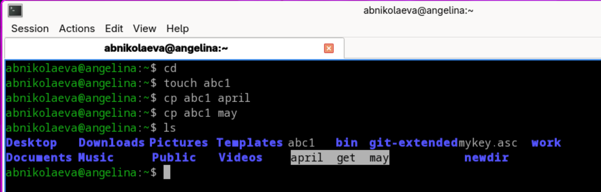
Копирую файлы april и may в каталог monthly
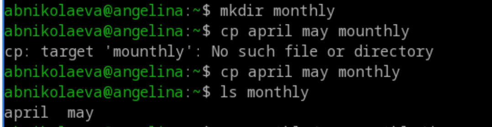
Копирую файл monthly/may в файл с именем june
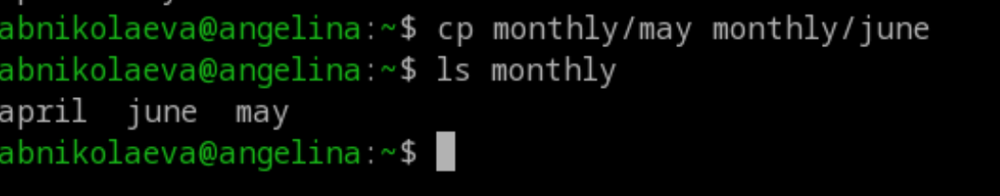
Копирую каталог monthly в каталог monthly.00
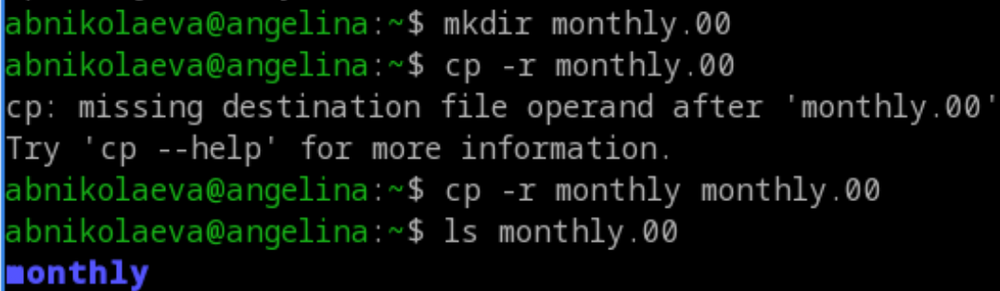
Копирую каталог monthly.00 в каталог /tmp
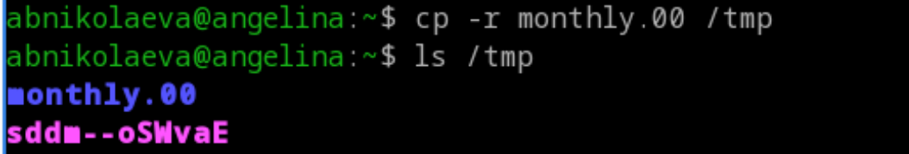
Изменяю название файла april на july в домашнем каталоге
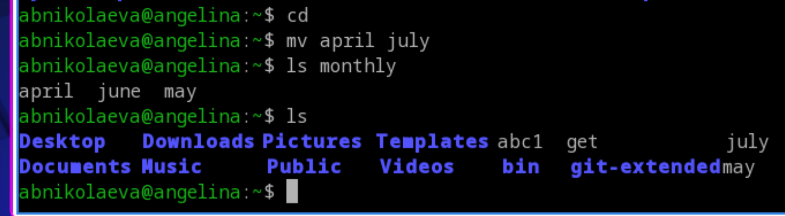
Перемещаю файл july в каталог monthly.00
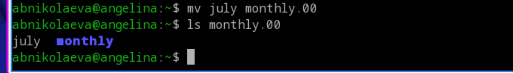
Переименовываю каталог monthly.00 в monthly.01
Перемещаю каталог monthly.01в каталог reports
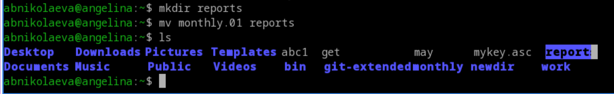
Переименовываю каталог reports/monthly.01 в reports/monthly
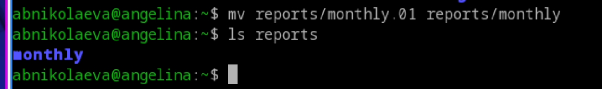
Создаю файл ~/may с правом выполнения для владельца, лишаю владельца файла ~/may права на выполнение
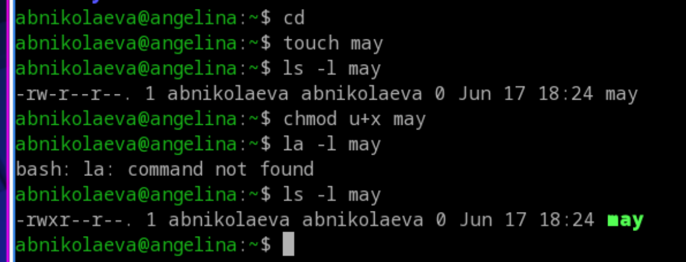
Создаю каталог monthly с запретом на чтение для членов группы и всех остальных пользователей
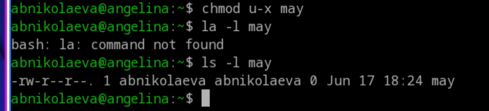
Создаю файл ~/abc1 с правом записи для членов группы
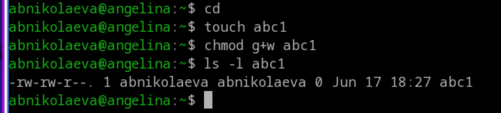
2. Выполните следующие действия, зафиксировав в отчёте по лабораторной работе используемые при этом команды и результаты их выполнения
Копирую файл /usr/include/sys/io.h в домашний каталог и называю его equipment.
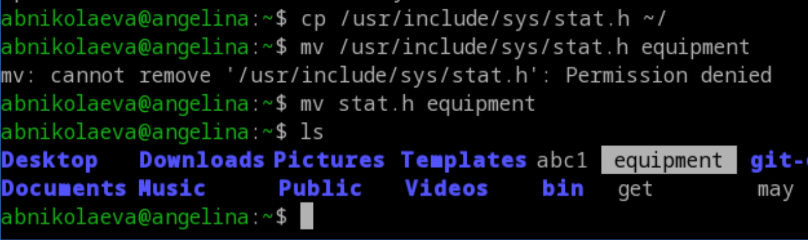
В домашнем каталоге создаю директорию ~/ski.plases. Перемещаю файл equipment в каталог ~/ski.plases.
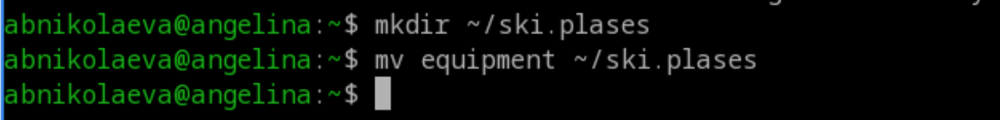
Переименовываю файл ~/ski.plases/equipment в ~/ski.plases/equiplist.
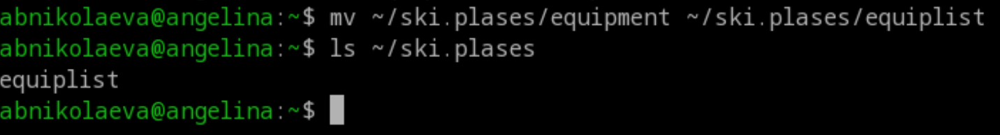
Создаю в домашнем каталоге файл abc1 и копирую его в каталог ~/ski.plases, называю его equiplist2.
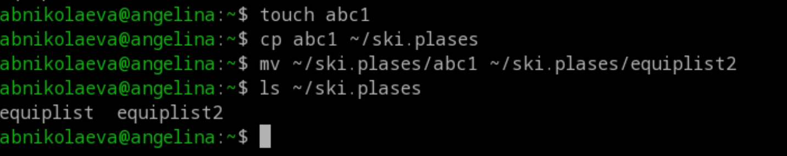
Создаю каталог с именем equipment в каталоге ~/ski.plases, перемещаю файлы ~/ski.plases/equiplist и equiplist2 в каталог ~/ski.plases/equipment.
![2.6 и 2.7] (image/18.png)
Создаю и перемещаю каталог ~/newdir в каталог ~/ski.plases и назоваю его plans.
![2.8] (image/19.png)
3. Определите опции команды chmod, необходимые для того, чтобы присвоить перечисленным ниже файлам выделенные права доступа, считая, что в начале таких прав нет: - 3.1. drwxr–r– … australia - 3.2. drwx–x–x … play - 3.3. -r-xr–r– … my_os - 3.4. -rw-rw-r– … feathers
![Управление правами доступа] (image/20.png)
4. Проделайте приведённые ниже упражнения, записывая в отчёт по лабораторной работе используемые при этом команды
Просмотриваю содержимое файла /etc/password.
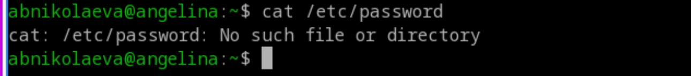
Копирую файл ~/feathers в файл ~/file.old, перемещаю файл ~/file.old в каталог ~/play
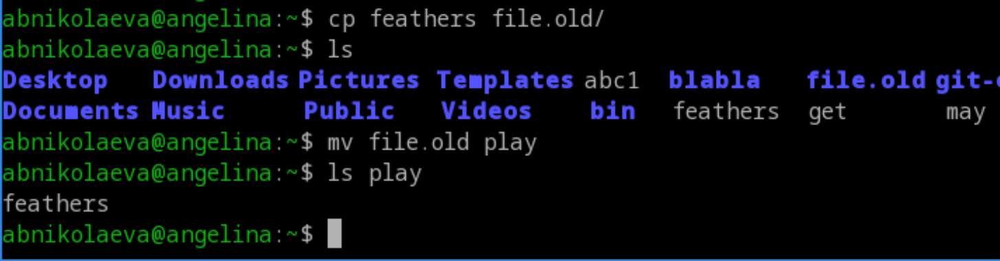
Копирую каталог ~/play в каталог ~/fun, перемещаю каталог ~/fun в каталог ~/play и называю его games
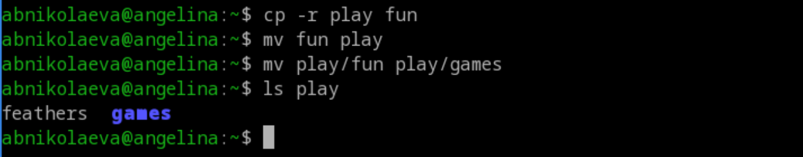
Лишаю владельца файла ~/feathers права на чтение.
Что произойдёт, если вы попытаетесь просмотреть файл ~/feathers командой cat? Что произойдёт, если вы попытаетесь скопировать файл ~/feathers?
В обоих случаях отказывает в доступе
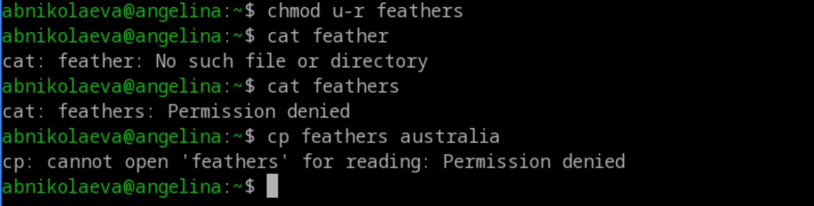
Даю владельцу файла ~/feathers право на чтение. Лишаю владельца каталога ~/play права на выполнение. Перехожу в каталог ~/play. Что произошло?
Отказано в доступе
Даю владельцу каталога ~/play право на выполнение.
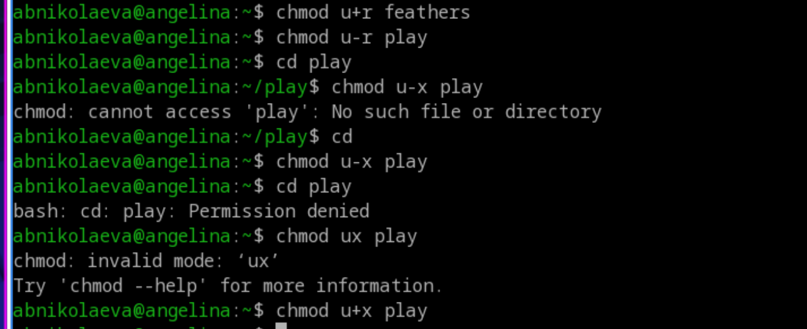
5. Прочитайте man по командам mount, fsck, mkfs, kill и кратко их охарактеризуйте, приведя примеры.
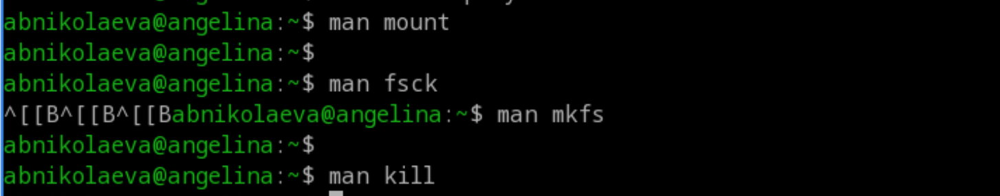
mount Подключение файловых систем к дереву каталогов. fsck Проверка и исправление ошибок файловой системы. mkfs Создание новой файловой системы. kill Отправка сигналов процессам (управление их жизненным циклом).
Выводы
Во время выполнения лабораторной работы я приобрела практические навыки взаимодействия пользователя с файловой системой Linux посредством командной строки.